pipeFit examples
Scans that worked, each with what was in the bin, what pipeFit found, and how we checked it. Open an example to turn its 3-D result.
How to read the 3-D results
AB, X and Y are the three tube types of the lab set. Where no camera saw a tube, its shape comes from the tube's 3-D scan. Each example says what it was checked against: a reference fit, the number of tubes only, or the simulation truth.
Real tubes, real camera pictures
Pictures from a depth camera (Intel RealSense D435) on the wrist of a Franka robot arm, in two bins: the lab's small blue bin and a larger industrial EMB 780 bin. The lab-bin scenes were scored many times while the method was developed, so they are not a held-out test.
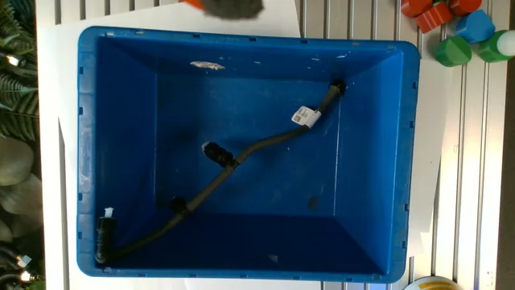
Real scanCamera pictureOne tube alone
In the bin: 1 tube: 1 AB · Lab bin
Found 1 of 1 tube, with the right type and no extra tube. Mean distance to the reference fit: 1.2 mm.
Checked against a reference fit from the same pictures (5 mm rule)
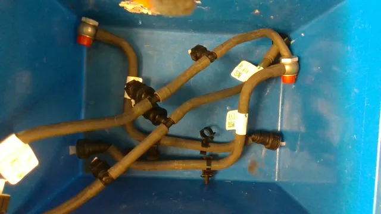
Real scanCamera pictureFour tubes lying across each other
In the bin: 4 tubes: 2 AB, 2 X · Lab bin
Found 4 of 4 tubes, all with the right type, no extra tubes. Mean distance to the reference fit: 0.8-2.8 mm.
Checked against a reference fit from the same pictures (5 mm rule)
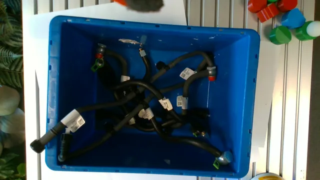
Real scanCamera pictureFull pile of seven tubes
In the bin: 7 tubes: 2 AB, 2 X, 3 Y · Lab bin
Found 7 of 7 tubes, all with the right type, no extra tubes. Mean distance to the reference fit: 1.4-3.7 mm.
Checked against a reference fit from the same pictures (5 mm rule)
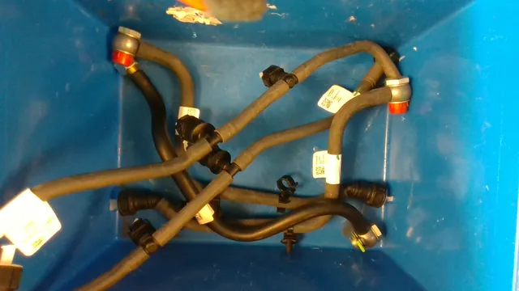
Real scanCamera pictureFive tubes left after two were taken out
In the bin: 5 tubes: 2 AB, 2 X, 1 Y · Lab bin
Found 5 of 5 tubes, all with the right type, no extra tubes. Mean distance to the reference fit: 1.3-2.8 mm.
Checked against a reference fit from the same pictures (5 mm rule)
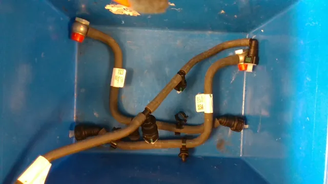
Real scanCamera pictureThree tubes left; one was dragged 47 mm
In the bin: 3 tubes: 1 AB, 2 X · Lab bin
Found 3 of 3 tubes, all with the right type, no extra tubes. Mean distance to the reference fit: 2.5-3.3 mm.
Checked against a reference fit from the same pictures (5 mm rule)
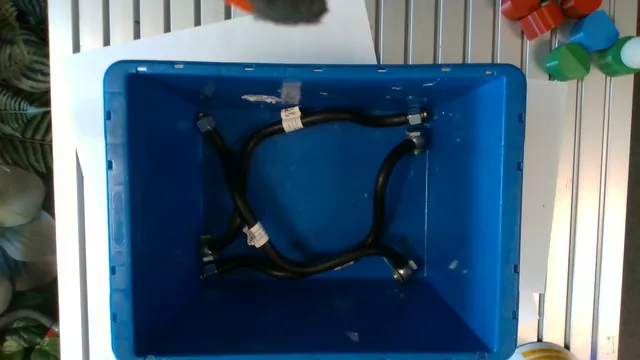
Real scanCamera pictureBin moved and turned, three Y tubes
In the bin: 3 tubes: 3 Y · Lab bin
Found 3 of 3 tubes, all with the right type, no extra tubes. Mean distance to the reference fit: 0.4-1.3 mm.
Checked against a reference fit from the same pictures (5 mm rule)
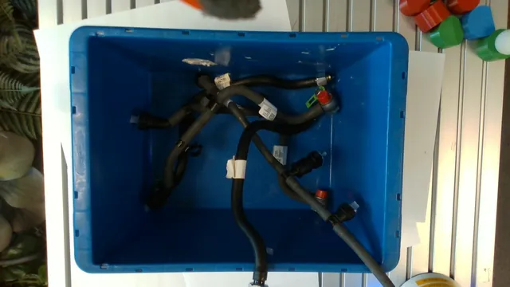
Real scanCamera pictureTwo tubes hanging over the rim
In the bin: 5 tubes: 1 AB, 2 X, 2 Y · Lab bin
Found 5 of 5 tubes, all with the right type, no extra tubes. Mean distance to the reference fit: 0.3-2.2 mm.
Checked against a reference fit; weak reference for 3 of 5 tubes
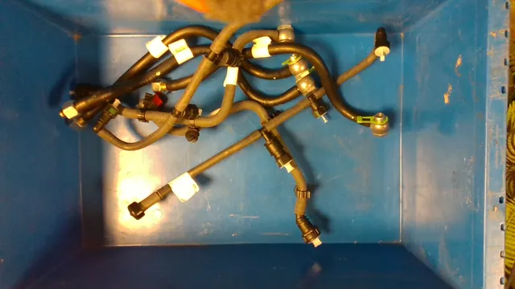
Real scanCamera pictureLarge bin, tangled pile of seven
In the bin: 7 tubes (operator's count) · EMB 780 bin
Found 7: 2 AB, 2 X, 3 Y. The runs on 2, 3 and 5 views of the same pictures also found 7 with the same types, placed 0.5-4.2 mm from this result.
Checked: number and types only (positions not checked)
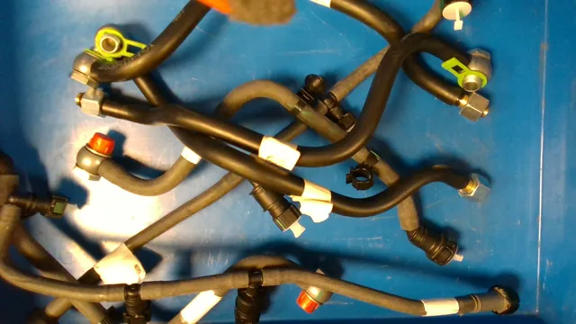
Real scanCamera pictureLarge bin, seven tubes seen from three close views
In the bin: 7 tubes (operator's count) · EMB 780 bin
Found 7: 2 AB, 2 X, 3 Y. A run on the same 3 views plus one overview also found 7 with the same types, placed 0.3-1.5 mm from this result.
Checked: number and types only (positions not checked)
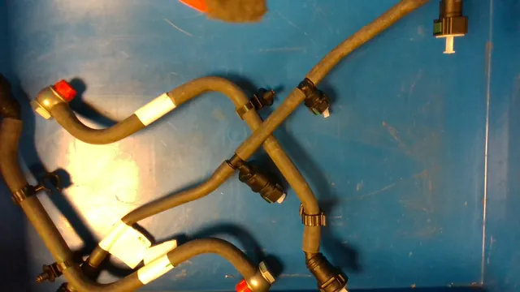
Real scanCamera pictureLarge bin, three tubes; the robot picked one
In the bin: 3 tubes (operator's count) · EMB 780 bin
Found 3: 1 AB, 2 X. The robot closed its fingers to 14.72 mm on a tube of model diameter 14.6 mm, held it, lifted it 50 mm and put it back.
Checked: number of tubes, and a real pick
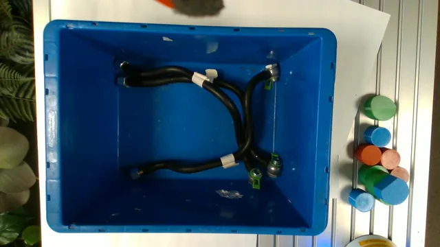
Real scanCamera pictureLab bin, three Y tubes; the robot picked one
In the bin: 3 tubes: 3 Y · Lab bin
Found 3, all Y. The robot closed its fingers to 15.4 mm (model diameter 15.8 mm) and lifted the tube out of the bin.
Checked: number and type by eye, and a real pick
Simulated scenes, where the truth is known
These are not real pictures. The scenes are simulated: scanned tube shapes or part drawings are dropped into a model of the lab bin, and depth and colour pictures are rendered with the measured noise of the real camera. They are development scenes, used while the method was tuned.
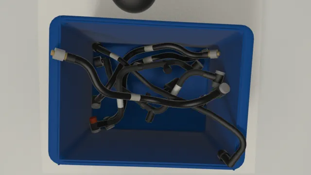
SimulationSimulated pictureSimulated pile of six tubes
In the bin: 6 tubes: 1 AB, 2 X, 3 Y · Simulated lab bin
Found 6 of 6 tubes, all with the right type, no extra tubes. Mean distance to the true centreline: 0.4-1.4 mm.
Checked against the simulation truth (5 mm rule)
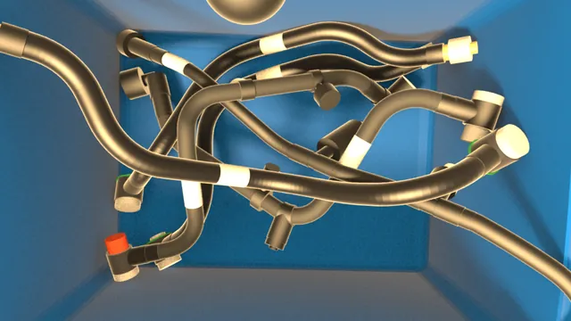
SimulationSimulated pictureThe same pile from only two views
In the bin: 6 tubes: 1 AB, 2 X, 3 Y · Simulated lab bin
Found 6 of 6 tubes, all with the right type, no extra tubes. Mean distance to the true centreline: 0.7-3.7 mm.
Checked against the simulation truth (5 mm rule)
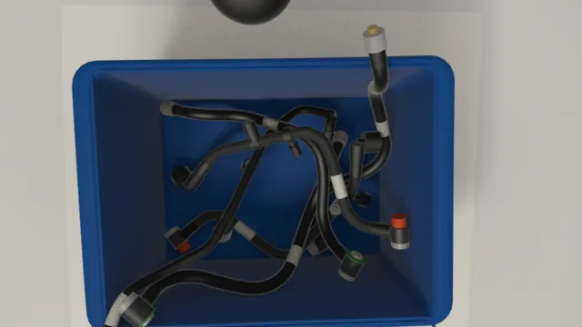
SimulationSimulated pictureSimulated pile, two tubes over the rim
In the bin: 6 tubes: 1 AB, 2 X, 3 Y · Simulated lab bin, moved
Found 6 of 6 tubes, all with the right type, no extra tubes. Mean distance to the true centreline: 0.5-1.2 mm.
Checked against the simulation truth (5 mm rule)
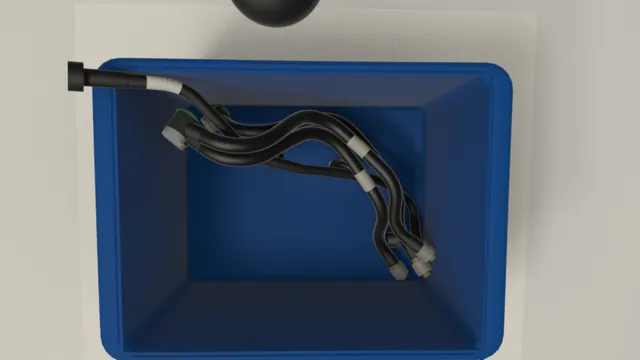
SimulationSimulated pictureSimulated: three Y tubes on one long AB
In the bin: 4 tubes: 1 AB, 3 Y · Simulated lab bin, moved
Found 4 of 4 tubes, all with the right type, no extra tubes. Mean distance to the true centreline: 0.6-1.3 mm.
Checked against the simulation truth (5 mm rule)
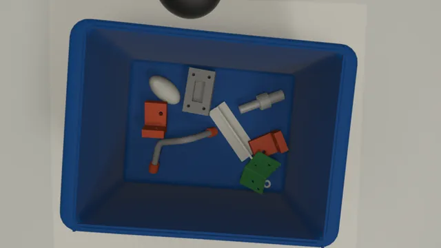
SimulationSimulated pictureSimulated rigid parts: seven listed parts and a stranger
In the bin: 7 listed parts, 1 part not on the list, 1 small washer · Simulated lab bin
All 7 listed parts found with the right type and pose (MSSD 0.9-2.0 mm, limit 5.0 mm here). The T-profile was not reported as a listed part, the absent part was not reported, and the washer was counted (1 of 1).
Checked against the simulation truth
How often it works
This page shows only examples that passed their check. On the full sets they come from (pipeFit v2, each scene on its own):
- Lab bin, all 16 stages of putting the 7 tubes in and taking them out again: 51 of the 56 tubes were found correctly (right type, within 5 mm of the reference fit). 5 tubes were missed, and 3 found tubes matched no reference tube within 5 mm.
- Moved lab bin, scenes r02-r04: 12 of 13 tubes correct, 1 missed, 1 found tube without a match.
- EMB 780 bin, three piles of 7 tubes (number of tubes only): with 12 views pipeFit found 5 (pile 1), 7 (pile 2), 5 (pile 3) tubes; with 3 views (the close view from above and two overviews) it found 7 (pile 1), 7 (pile 2), 7 (pile 3). More pictures did not always help.
- Simulated tube piles (24 piles, 116 visible tubes): with 6 views 116 of 116 were correct, with 0 extra tubes, and 24 of 24 piles were complete. With 2 views 109 of 116 were correct and 18 of 24 piles complete.